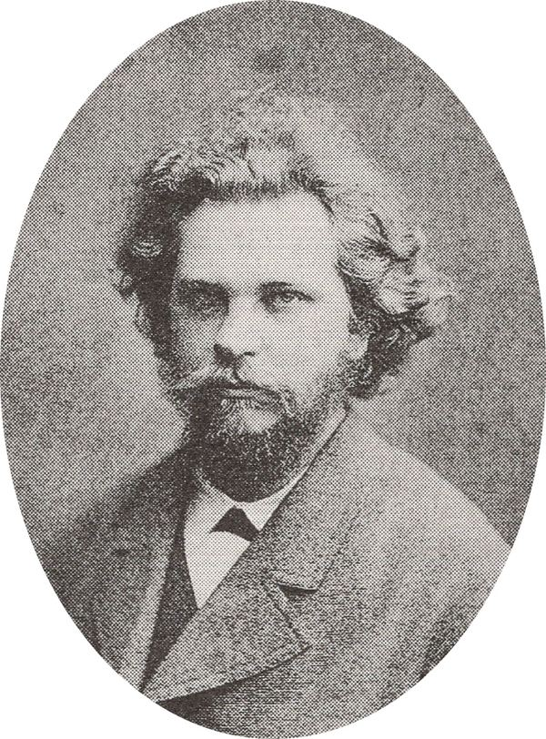

Энергия, у которой есть скорость
Читается подряд. Нажми на удар — откроется подробный разбор с источниками.
Николай Умов родился 23 января 1846 года по старому стилю в Симбирске, в семье врача.Узнать подробнееСвернуть
По новому стилю — 4 февраля. Отец, Алексей Павлович, окончил медицинский факультет Казанского университета и был страстным натуралистом: собирал бабочек. В 1858 году семья переехала в Москву.

Николай Умов. Фотография из альбома портретов математиков к 70-летию Карла Вейерштрасса, 1885; на той же странице альбома — Чебышёв, Буняковский, Бугаев. Общественное достояние. Источники: «Они оставили след в истории Одессы», очерк А. Креймера «Умов Николай Алексеевич» (odessa-memory.info); энциклопедия «Кругосвет», «Умов, Николай Алексеевич» (krugosvet.ru).
В 1867 году он окончил Московский университет, а в 1871-м его позвали преподавать физику в Новороссийский университет в Одессе.Узнать подробнееСвернуть
Жил он там поначалу бедно: университет дал две комнаты с условием «не иметь прислуги и не заводить кухни». Здесь Умов подружился с Ильёй Мечниковым и Иваном Сеченовым и отдал Одессе два десятилетия.
Источники: «Кругосвет»; очерк А. Креймера (odessa-memory.info).
Теоретическую физику Умов изучал сам — по книгам Ламе, Клебша и Клаузиуса: в русских университетах такого курса тогда не читали.Узнать подробнееСвернуть
«Самообразование во многом определило оригинальность суждений и идей Умова», — пишет «Кругосвет».
Источник: «Кругосвет» (krugosvet.ru).
В 1874 году вышла его докторская диссертация «Уравнения движения энергии в телах» — и в том же году её суть он напечатал по-немецки.Узнать подробнееСвернуть
Немецкая статья «Ableitung der Bewegungsgleichungen der Energie in continuirlichen Körpern» — «Вывод уравнений движения энергии в сплошных телах» — вышла в журнале Zeitschrift für Mathematik und Physik, том 19, страницы 418–431, за подписью «Nicolaus Umow, Docent an der Universität Odessa». Её первая страница — в начале этого зала.
Источники: физический факультет МГУ, «Н. А. Умов: наша история» (phys.msu.ru); «Кругосвет»; скан журнала 1874 года на archive.org. Очерк на odessa-memory.info называет годом защиты 1877 — на странице год по МГУ и «Кругосвету» и по самой публикации.
Умов начал с того, чего до него никто не делал: назвал «плотностью энергии» количество энергии в единице объёма в каждой точке тела.Узнать подробнееСвернуть
В статье это звучит так: «Количество энергии, заключённое в элементе объёма, я буду обозначать J dx dy dz, а под J понимать плотность энергии в точке пространства». Энергию частицы тела он складывал из «живой силы» движения и потенциальной энергии упругости.
Источник: N. Umow, Zeitschrift für Mathematik und Physik, 1874, т. 19, с. 418–419 (перевод наш); физфак МГУ: Умов «впервые ввёл понятие о скорости и направлении движения энергии, плотности энергии в данной точке среды».
Умов первым стал считать энергию тем, что течёт, как жидкость: поток энергии через окошко равен её плотности, умноженной на скорость движения.Узнать подробнееСвернуть
Находка дняЗакон движения энергии он вывел «из аналогичного случая сохранения количества вещества при движении сжимаемой жидкости»: энергия в одном месте может прибыть, только если убыла в соседнем. Количество энергии, которое за единицу времени проходит через единицу площади, у него — произведение J на скорость движения энергии. Это и есть вектор Умова.
Источник: N. Umow, 1874, с. 418–420 и 430–431 (перевод наш); физфак МГУ; «Кругосвет».
Для жидкостей Умов вывел, что энергия движется туда же, куда частицы, — поэтому поперечных колебаний в жидкости не бывает.Узнать подробнееСвернуть
«Направление движения энергии в жидких телах совпадает с направлением движения его частиц. Поэтому, например, в жидкости не могут возникать поперечные колебания, что общеизвестно», — пишет он. А поток энергии в жидкости у него равен скорости, умноженной на сумму давления и «живой силы».
Источник: N. Umow, 1874, с. 427 (перевод наш).
Он даже посчитал: в воде под давлением в одну атмосферу энергия не может двигаться медленнее 28,75 метра в секунду.Узнать подробнееСвернуть
Это наименьшая скорость энергии в несжимаемой жидкости при заданном давлении: по Умову она растёт с давлением и падает с плотностью жидкости.
Источник: N. Umow, 1874, с. 428 («Für n=1 haben wir für Wasser c = 28,752 Meter in 1″»).
Сам Умов писал об упругих телах и жидкостях — на электричество и свет свои понятия он не распространил.Узнать подробнееСвернуть
Это и есть честная граница первенства: общая мысль о плотности, скорости и потоке энергии — его, а частный случай электромагнитного поля разобрали позже другие.
Источник: «Кругосвет»: «Сам Умов, однако, не обобщил эти понятия на другие виды энергии, кроме энергии в упругих телах».
В 1884 году англичанин Джон Пойнтинг ввёл поток энергии электромагнитного поля — и формулу у нас зовут вектором Умова — Пойнтинга.Узнать подробнееСвернуть
Пойнтинг описал вектором движение электромагнитной энергии — через десять лет после статьи Умова. Вектор Умова — Пойнтинга, по словам одесского очерка, «ныне знаком каждому первокурснику».
Источники: физфак МГУ («вектор Умова — Пойнтинга»); «Кругосвет»; очерк А. Креймера (odessa-memory.info): вектор, «ныне знакомый каждому первокурснику».
В 1893 году Умов вернулся в Москву, а после смерти Столетова в 1896-м возглавил кафедру физики Московского университета.Узнать подробнееСвернуть
Вместе с Петром Лебедевым он готовил проект Физического института при университете и 17 лет избирался президентом Московского общества испытателей природы. Андрей Белый, слушавший его лекции, вспоминал, как Умов, «простерши руки», изрекал: «На часах вселенной ударит полночь…»
Источники: «Кругосвет»; физфак МГУ (цитата из мемуаров А. Белого «На рубеже двух столетий»).
В 1911 году Умов в знак протеста против министра просвещения Кассо ушёл из университета вместе с группой профессоров; умер он в январе 1915 года.Узнать подробнееСвернуть
Скончался в ночь на 15 января 1915 года по старому стилю (28 января по новому), похоронен на Ваганьковском кладбище.
Источники: «Кругосвет»; физфак МГУ; очерк А. Креймера (odessa-memory.info).